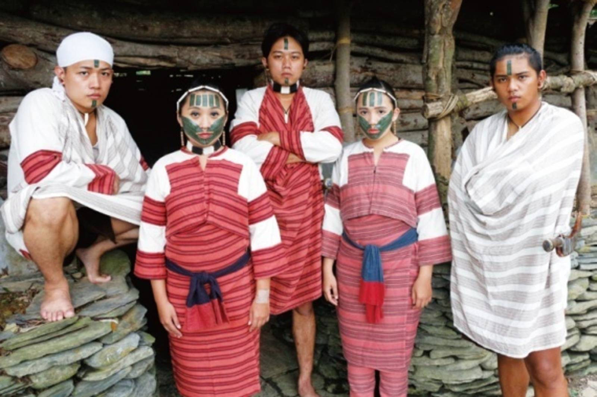

族群介紹
泰雅族主要分布於台灣中北部的山區，如新北、桃園、宜蘭、苗栗、南投等地。 傳統社會以 gaga（祖訓） 為核心價值，強調族人之間的責任與互相扶持。 泰雅族也以紋面文化與精美的織布圖紋聞名，圖案往往代表家族、身分與記憶。
地理位置（Google 地圖示意）
使用方式：在 Google 地圖搜尋地點 → 按「分享」 →「嵌入地圖」→ 複製 iframe 內的網址，
貼到上面 YOUR_GOOGLE_MAP_EMBED_URL 的位置即可。
照片與影片介紹
紋面與織布文化

影片介紹